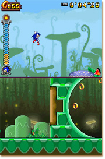

また会ったなーーー！！！
もう冬が近づいてるけど、みんな元気にしてるんかな？
南国生まれのウチは寒いのは大の苦手やからコタツを用意せなあかんわ・・・。
まぁ、とりあえずコタツとミカンがあったら生きていけるけどなー。
えっ？
ミカンと交換でミッション２８のメダルの取り方を教えてくれ？
・・・。
ウチがモノで釣れるとでも思ってるんかーーー！？
重いのを頑張って１箱も運んで来た！？
しゃーないなぁ・・・、そこまで言うんやったら貰ったるわ！
でっ、ミッション２８のメダルがある場所やな？
ほなっ、さっそくいくでーーー！！！
このステージは何回も遊んでるやろうから、写真の地形に見覚えあると思うけど、まずは、そこまで行ってみてや。
ほんで、レーダーの矢印が右の方向を示してる思うけど、そこの淵にあるスプリングを利用してジャンプや！
そしたら、そのままダッシュサークルで空中を進めるやろ？
ダッシュサークルで空中移動に成功したら、最後のダッシュサークルを抜ける時に↑+Rで空中技をカッコ良く決めたってや！
そうすると、さらに高く、さらに遠くに飛べるやろ？
そこまで出来たら、あとはもうメダルは手に入れたも同然やで。
宝箱が視界の隅に見えてるやろ？
中身はちゃんと、ウチに届けるんやで。
ここ以外にもメダルはまだまだ色々な場所にあるから、頑張って探してやーーー！！！
マリン船長の子分になるまでの道のりはまだまだ先が長いでー！
ほなっ、またなー！
